Research chapters — first six targets
1. FortiGate — Explicit-proxy HTTP connection coalescing: static, multiplex and serverpool
An explicit web proxy terminates a client-side HTTP connection and creates a separate server-side connection. That distinction permits FortiGate to reuse upstream TCP handshakes instead of treating each browser request as a completely independent origin connection. FortiOS exposes three connection modes: static, multiplex, and serverpool. They govern the lifetime and sharing boundary of established upstream connections, not whether firewall policies, DNS resolution, TLS inspection, or authentication are bypassed. The feature is especially relevant when many authenticated clients repeatedly access the same origin IP.
In static mode, the default, only one server connection exists during the proxy session; the example in Fortinet documentation shows a separate server-side TCP handshake for each client. Multiplex retains established upstream connections until the corresponding proxy session ends. Serverpool permits established connections to be shared across different proxy sessions. The documented demonstration sends multiple client requests to one origin and sees one upstream three-way handshake while two HTTP connections are served. That is a transport reuse result; it does not imply one application request or one client identity.
Packet-path ownership is the key concept. Client A and Client B first connect to the FortiGate explicit proxy listener, for example 10.1.100.6:8080. A proxy policy matches the request and any inspection profiles. FortiGate then selects or opens an origin-side connection. When serverpool reuse is eligible, the later request can use an existing connection to the same destination IP. Upstream packet capture therefore shows fewer SYN/SYN-ACK/ACK sequences than the number of client transactions. Downstream captures still show each client's own connection to the proxy.
Fortinet's example enables the explicit proxy on the receiving interface, defines a proxy policy with action accept, and selects serverpool under config web-proxy explicit. The HTTP connection mode is a global explicit-proxy setting in the cited release, whereas access and inspection decisions remain tied to the proxy policy. In a lab, change only the connection mode while holding destination IP, client requests, inspection profiles, and timing constant. That isolates the connection-reuse variable from unrelated cache, DNS, or policy changes.
Verification must correlate three observations: the number of client-side TCP sessions, the number of origin-side handshakes, and the successful HTTP responses. A reduced SYN count proves reuse occurred for the tested origin and workload; it does not prove a higher request success rate or that reuse will apply to every destination. An existing upstream connection may be ineligible when destination identity, lifecycle, or protocol requirements differ. Compare a static-mode baseline with serverpool under identical traffic and use a server-side sniffer to count origin SYNs.
A realistic failure report is 'the proxy is configured for serverpool but every request still establishes TCP.' First confirm traffic actually reaches the explicit-proxy listener and matches the proxy policy, then confirm the destination IP and the timing of requests. Check that the observed SYNs are on the upstream interface rather than client-facing traffic. Avoid disabling inspection as a shortcut: changing policy behavior would invalidate the experiment. During upgrades, re-check the command's supported syntax and the applicable release's proxy-session behavior rather than assuming reuse survives every transition.
config web-proxy explicit
set status enable
set http-incoming-port 8080
set http-connection-mode serverpool
end
config system interface
edit "port2"
set explicit-web-proxy enable
next
endEvidence: Client-facing capture: two distinct proxy connections. Origin-facing capture: fewer TCP three-way handshakes than HTTP requests when reuse succeeds. Compare static versus serverpool.
Primary: https://docs.fortinet.com/document/fortigate/7.4.6/administration-guide/760822/http-connection-coalescing-and-concurrent-multiplexing-for-explicit-proxy · Matching Community scenario not verified
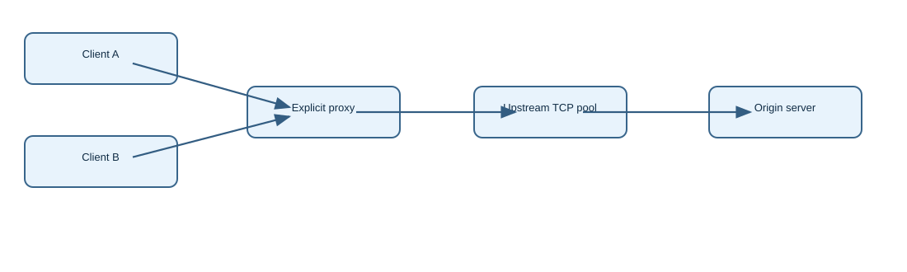
Edit draw.io diagram
2. FortiManager — Object reference closure and the forced-deletion guard
FortiManager maintains policy-package and object relationships in an ADOM database, while managed devices maintain their own installed configurations. Deleting an object is therefore not equivalent to removing an unused line from one FortiGate. A shared address, service, SSID, or normalized object may still be referenced by a policy, another object, a device database, or an older configuration artifact. The Where Used graph is the first diagnostic boundary: it tells the administrator what FortiManager believes depends on the object.
Fortinet's Administration Guide permits deletion of objects that are still referenced, but surfaces a Where Used dialog and a Delete Anyway choice. The CLI setting objects-force-deletion determines whether the administrator may force this action; the documented default is enabled. Disabling forced deletion is a governance control that protects referential integrity during ordinary object maintenance. It is not a cleanup tool and does not itself remove references, push changes to devices, or prove the object is no longer present on a managed FortiGate.
The operational transaction has distinct stages: identify the correct ADOM, locate the object in Policy & Objects, inspect Where Used, update or remove references, delete the object, and install the resulting configuration to affected devices. At the installation stage, FortiManager evaluates policy and device configuration changes against target devices. A successful deletion from the management database does not prove a device has received the desired update. Conversely, a FortiGate showing a replacement object does not prove the old object has no FortiManager-side reference.
A September 15, 2026 Fortinet Community case illustrates the trap. An older wireless VAP appeared unused on the device, but FortiManager still reported references when deletion was attempted. The scenario calls for inspecting the management database and Where Used relationships, not simply retrying deletion. It is possible to have a stale-looking reference at one layer while another layer already contains a newer configuration. Identify the precise reference owner before removing it; force deletion can make a policy or template unexpectedly incomplete.
To validate the correction, save a before-and-after snapshot of the Where Used results, confirm the object no longer appears in the appropriate ADOM object list, and inspect the installation preview for each target device. Then verify the installed object or policy state on the FortiGate. A clean Where Used result is a database reference observation, not a packet-path or installed-device observation. A successful installation preview is a planned transaction, not evidence that the final installation completed.
HA and multi-ADOM environments add scope considerations: the same name can appear in different ADOMs, and a global object may have broader consumers than one policy package. Workspaces and approval flows may prevent another administrator from committing a dependent change until locks or approvals are resolved. When an object cannot be deleted, distinguish an authorization failure, a live reference, a stale database reference, and an installation inconsistency. Do not use a database repair command from a support article unless its version applicability and precise fault signature are established.
config system admin setting
set objects-force-deletion disable
end
# GUI: Policy & Objects > select object > Where Used
# Remove references before deletion; preview install per device.Evidence: Where Used before/after; ADOM object inventory; policy-package installation preview; installed FortiGate configuration. Each proves a different boundary.
Primary: https://docs.fortinet.com/document/fortimanager/7.6.4/administration-guide/322714/delete-an-object · Scenario: https://community.fortinet.com/fortimanager-27/troubleshooting-tip-unable-to-delete-object-when-the-object-is-not-used-in-the-device-229930
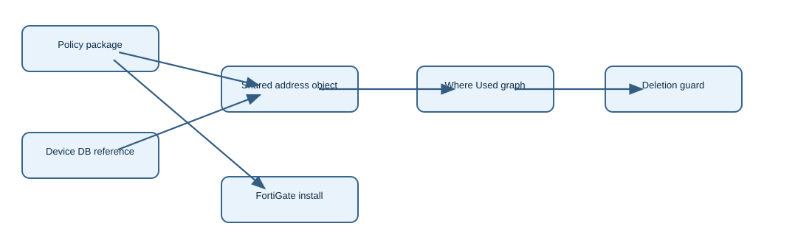
Edit draw.io diagram
3. FortiAnalyzer — Incident-driven on-demand playbooks and report eligibility
FortiAnalyzer can convert a security incident from an investigative record into an explicit automation execution context. On the incident analysis page, Execute Playbook presents eligible playbooks; the operator selects one, supplies any exposed parameters, and starts a job. The Playbook Tasks dialog then shows live progress, a timeline, and raw logs. This is different from an event handler automatically generating an event and triggering a playbook. An on-demand playbook requires an analyst action and must be configured with the appropriate trigger type.
The mechanics involve at least four objects: an incident containing evidence and indicators, a playbook definition, a connector action, and the execution job. An incident can aggregate triggering events and attached indicators; a playbook can call FortiAnalyzer or external connector actions to enrich, block, or report. The incident's Executed Playbooks history links the analyst's action to the job. A connector that is configured but not healthy cannot be assumed to execute successfully merely because the Run button is visible.
Reporting has an additional eligibility gate. The 7.6.5 guide states that only reports with Auto Cache and Extended Log Filtering enabled can be run from an incident. Those settings matter because the incident must supply endpoint and time-period context to a report that can be generated efficiently. If a report is absent from the incident's Run Report picker, inspect report settings before assuming an RBAC problem or a broken incident. Do not confuse creating an incident, attaching an existing report, and generating a new report.
Build a lab with a known event handler that produces an incident, a minimal ON_DEMAND playbook, and one connector action that produces a visible result. Confirm the incident appears in Incidents and Events, open its analysis, execute the playbook, and observe the Playbook Tasks timeline. Then add a report with Auto Cache and Extended Log Filtering enabled. Keeping the first run minimal makes it possible to isolate trigger configuration from connector credentials, parameter substitution, and report eligibility.
The older Fortinet Community tutorial is useful as a scenario source because it documents the sequence event handler → incident → playbook → report, and notes that an on-demand test is valuable when an automatic trigger is not firing. It also points to Playbook Monitor raw logs. Use the current 7.6.x navigation in the Administration Guide because the historical FortiSoC menu names have changed. A successful event handler proves only incident creation; a successful playbook job proves action execution; an attached report proves the reporting stage.
Operationally, do not treat playbook retries as harmless. A block action can change enforcement state, while a report action may be safe to repeat. Verify connector scope, input parameters, and audit history before rerunning. If an incident remains unresolved despite a green playbook job, inspect the actual target-side effect separately. In an HA or upgraded deployment, validate the playbook trigger and connector availability after migration, and check whether any newly required permissions or report settings changed.
GUI: Incidents and Events > Incidents > select incident > Execute Playbook
GUI: Playbook Tasks > job details > raw logs
GUI: Reports > Settings > enable Auto Cache and Extended Log Filtering
Evidence: Incident ID, Executed Playbooks job ID, task timeline/raw logs, report eligibility, target-side action. A visible Run control alone does not prove execution.
Primary: https://docs.fortinet.com/document/fortianalyzer/7.6.5/administration-guide/813113 · Scenario: https://community.fortinet.com/fortianalyzer-6/technical-tip-how-to-create-a-custom-playbook-using-an-event-handler-and-creating-an-incident-under-fortianalyzer-133477
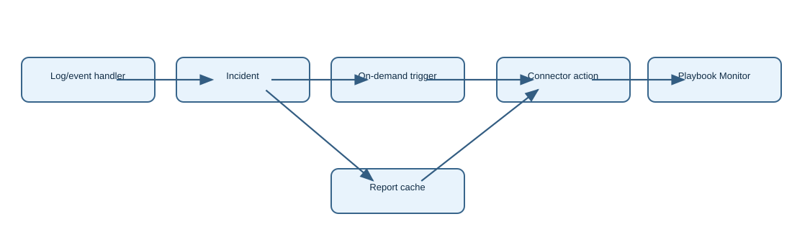
Edit draw.io diagram
4. FortiSwitch — Dynamic MAC movement telemetry through L2MAC SNMP traps
A switch's forwarding database learns source MAC addresses against ports and VLANs. FortiSwitch can expose selected changes as L2MAC SNMP traps so an external monitoring or NAC system learns when a dynamic MAC is added, moved, or deleted. This is not the same as an interface link-up trap: one physical port can remain up while a phone, endpoint, or downstream bridge changes its learned MAC set. Fortinet explicitly limits this trap mechanism to dynamic MAC addresses and warns that hardware or software may lose individual events.
The FortiLink guide describes two distinct enabling boundaries. The FortiGate-managed SNMP community must include the l2mac event category, and the relevant FortiSwitch interface must log dynamic MAC events when required by its access mode. A receiver address and SNMP delivery path must also be valid. Enabling only the community event bit does not necessarily make the switch produce a MAC event; enabling only per-port logging does not prove a trap reaches the monitoring station.
The documented FortiOS configuration includes config switch-controller snmp-community, selecting a community, and set events l2mac. On a switch interface, log-mac-event enables the per-port event source in the cited troubleshooting case. FortiLink-managed switch configuration may be pushed from the FortiGate, so verify the effective configuration on the switch rather than assuming a locally entered command will survive a controller update. Restrict SNMP receiver access and use the strongest supported SNMP security mode for the deployment.
Verification follows the complete evidence chain: generate a controlled dynamic MAC learn or move, inspect the switch MAC table, confirm an event is generated, capture the outgoing UDP/162 packet, and confirm the receiver decodes the correct MAC, VLAN, and port. The switch table proves learning, but not trap generation. A packet at the sender proves transmission, but not reception. A receiver log proves ingestion, but does not guarantee every event was delivered, because the underlying notification path is not a reliable state-reconciliation protocol.
A Fortinet Community case describes a switch with apparently correct SNMP settings that still did not produce L2MAC traps. The missing boundary was per-port log-mac-event. That failure is distinguishable from a blocked UDP/162 path because no event packet appears at the source. Conversely, if traps leave the switch but the NAC inventory remains stale, inspect firewall rules, source IP, SNMP credentials, receiver parsing, and whether the NAC device model recognizes the event. Do not solve a receiver problem by changing the switch's forwarding behavior.
At scale, MAC churn can be substantial on access ports connected to virtual hosts or phones. Enable telemetry where it has operational value, and combine traps with periodic polling to recover from lost notifications. When replacing or upgrading a FortiSwitch, recheck the managed-switch template, SNMP event bit, interface logging, and trap receiver. An isolated successful test on one port cannot establish that the same settings exist on every member of a switch stack.
config switch-controller snmp-community
edit 1
set name "monitoring"
set events l2mac
next
end
# On applicable FortiSwitch interface:
config switch interface
edit "port31"
set log-mac-event enable
next
endEvidence: Dynamic MAC table entry → per-port event → SNMP trap egress capture → receiver record. Compare MAC/VLAN/port and timestamps.
Primary: https://docs.fortinet.com/document/fortiswitch/8.0.0/fortilink-guide/173288 · Scenario: https://community.fortinet.com/fortiswitch-36/technical-tip-l2-to-mac-events-traps-are-not-generated-on-fortiswitch-147361
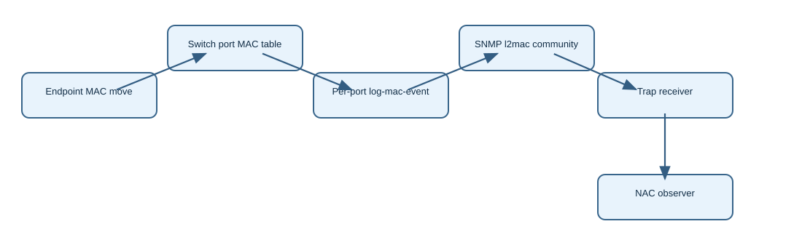
Edit draw.io diagram
5. FortiAP/Wireless — Wi-Fi 7 SAE_EXT AKM24 selection and radio-profile compatibility
Wi-Fi 7 introduces authentication and radio capabilities that must be advertised coherently by the SSID and by the FortiAP radio profile. Fortinet's 7.6.0 configuration example distinguishes an AKM24-only WPA3-SAE SSID from a transition SSID that offers additional AKMs. AKM24 uses SAE_EXT, and Fortinet notes that enabling akm24-only is appropriate only when all clients support Wi-Fi 7: it does not provide backward compatibility. That is a client-capability boundary, not a signal-strength or roaming problem.
The authentication sequence begins with beacon/probe advertisements that identify the SSID security and available AKM suites. A client chooses an advertised compatible AKM and performs SAE authentication, followed by association and protected data exchange. The cited configuration enables Protected Management Frames and beacon protection on the AKM24-only SSID, and uses sae-h2e-only. On a transition SSID, additional-akms akm24 allows capable clients to choose a stronger or newer advertised AKM while retaining a compatibility path for other clients.
Radio configuration is separate from SSID authentication. Fortinet's FAP-441K example assigns a transition SSID to a 5 GHz 802.11be radio and an AKM24-only SSID to a 6 GHz 802.11be radio. The 6 GHz radio uses 320 MHz channel bonding and a channel-bonding-ext selection. These settings require a supported AP platform, regulatory domain, client capability, and permitted channel plan. A client may support WPA3 but not the particular AKM or 320 MHz operating mode; these are independent compatibility checks.
A safe deployment uses a staged compatibility matrix. Start with an SSID configured for mixed clients and verify association and negotiated security for representative Wi-Fi 6 and Wi-Fi 7 devices. Then test an AKM24-only SSID with known-capable Wi-Fi 7 clients. Check the actual VAP assigned to each radio; creating a VAP object without binding it to the intended radio does not broadcast it. Keep 5 GHz and 6 GHz results separate because client hardware, regulatory restrictions, and security requirements differ.
For troubleshooting, capture association failures or review AP/client diagnostics to determine whether the failure occurs before SAE, during SAE, at association, or after IP address acquisition. A missing SSID points toward profile/radio/channel assignment. An unsupported AKM points toward security negotiation. Successful association with no DHCP address points downstream to VLAN, bridge/tunnel forwarding, or DHCP, not automatically to AKM24. A 320 MHz configuration does not prove that a client negotiated a 320 MHz link.
Upgrade testing must verify both FortiOS controller and FortiAP firmware compatibility for the exact model. The source example is tied to FortiAP 7.6.0 and the FAP-441K; do not transpose every radio command to older hardware. Where a site mixes client generations, a separate modern-only SSID may be operationally safer than silently changing a production transition SSID. Record negotiated AKM and channel width for each test device rather than relying only on the AP's configured maximum.
config wireless-controller vap
edit "sae-akm24"
set security wpa3-sae
set pmf enable
set beacon-protection enable
set sae-h2e-only enable
set akm24-only enable
next
end
# Bind VAP to a supported 802.11be radio in wtp-profile.Evidence: SSID beacon AKM advertisement; client association/SAE status; negotiated radio band/channel width; VLAN/DHCP success after association.
Primary: https://docs.fortinet.com/document/fortiap/7.6.0/fortiwifi-and-fortiap-configuration-guide/140799/creating-a-fortiap-profile · Matching Community scenario not verified
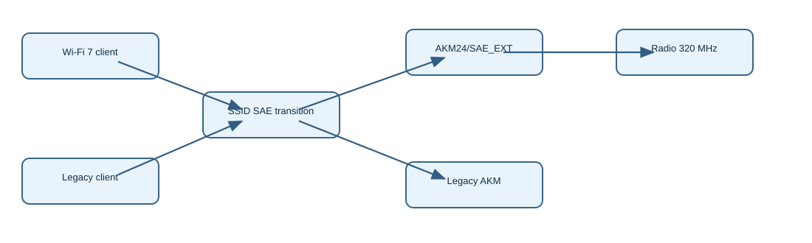
Edit draw.io diagram
6. FortiNAC — Legacy Access Point Management: DHCP-driven normal versus isolated host treatment
FortiNAC's legacy Access Point Management addresses a topology in which hosts attach through an unmanaged access point or hub that cannot dynamically assign per-client VLANs. Ordinary switch-port VLAN enforcement cannot distinguish two clients behind the same bridge. Access Point Management instead uses DHCP and DNS service on a shared access VLAN to provide different IP and name-resolution behavior for known normal hosts and hosts needing registration or isolation. The key enforcement boundary is the IP lease and DNS experience, not an 802.1X CoA VLAN change.
The FortiNAC 9.4 Administration Guide requires the AP to appear connected to an upstream switch interface and describes placing that port in the Access Point Management group, removing the AP from the Bridging Devices group, and clearing any inappropriate user-defined uplink flag. These inventory relationships matter because FortiNAC must know which shared segment it controls. If the bridge remains classified as a generic uplink or bridging device, the controller may not apply the intended host-treatment workflow.
Fortinet's Community walkthrough describes two address pools within the shared VLAN. A host in the normal state receives an address and production DNS settings from the authenticated pool. A host in another state receives an isolation address and uses FortiNAC DNS wildcarding and portal redirection. DHCP relay from the relevant gateway must reach FortiNAC, and the AP/hub's switch port must be configured consistently. The AP is not necessarily performing any policy decision; it forwards frames while FortiNAC supplies the differentiated IP service.
Verification begins with two test hosts behind the same AP: one registered/normal and one unregistered. Confirm the AP's switch-port placement in FortiNAC, the VLAN, the relay destination, and the DHCP discover/offer exchange. Compare assigned addresses and DNS servers. Test portal presentation for the isolated host and normal resolution for the registered host. A DHCP offer alone proves address assignment, not that upstream firewall rules or the isolation portal are effective; test permitted and denied destinations explicitly.
Failure modes follow the transaction. If both hosts receive production leases, the host-state lookup or address-pool selection may be wrong. If neither receives a lease, check relay and DHCP reachability before adjusting registration policy. If an isolated host gets the expected address but browses unrestricted, verify DNS interception and upstream policy. If the host's status changes but its IP does not, renew the DHCP lease; a cached lease can delay the visible transition even after FortiNAC's database state changes.
Critical release caveat: Fortinet's Community article states Access Point Management was removed in FortiNAC-F 7.6. This chapter therefore teaches a legacy FortiNAC 9.4 mechanism and should not be implemented as a new F-series 7.6 design. During migration, document the dependency on DHCP/DNS enforcement and replace it with a supported per-client network-control method. Mixing legacy and F-series instructions would create a false configuration path.
FortiNAC 9.4 GUI:
Inventory > select AP > verify upstream switch interface
Place AP-connected port in Access Point Management group
Remove AP from Bridging Devices group
Clear incorrect User Defined Uplink flag
Settings > Control > Access Point Management (legacy only)
Evidence: Two host states on one VLAN → distinct DHCP offers/DNS settings → isolation portal versus production reachability. Feature removed in FortiNAC-F 7.6.
Primary: https://docs.fortinet.com/document/fortinac/9.4.0/administration-guide/518065/access-point-management · Scenario: https://community.fortinet.com/fortinac-28/technical-tip-configuring-access-point-management-133623
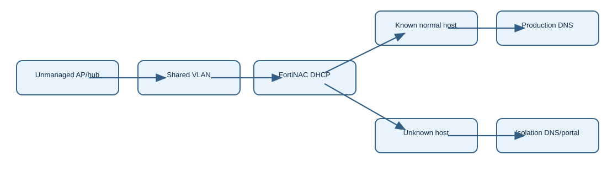
Edit draw.io diagram
Research chapters — remaining six targets
7. FortiNAC-F — Wireless Security SSID mappings as a generated policy-object graph
FortiNAC-F Wireless Security is not merely a place to enter an SSID and a VLAN. The Administration Guide documents an object-generation workflow in which creating an SSID mapping can automatically create port groups, user/host profiles, network access configurations, access policies, portal policies, and, for onboarding, compliance and supplicant policies. These objects form a dependency graph. A change to the SSID mapping may have downstream policy effects even when the operator never opened the individual generated policy editor.
At the discovery boundary, supported wireless devices are placed into Wireless Controllers and Wireless APs containers and into the topology. Each SSID is represented by a port group named for that SSID. Directory groups provide attributes for user/host profile matching. A guest template introduces a role, while the generated profile combines a connection location such as an SSID port group with Who/What role criteria. The matching network access policy then selects a network access configuration that determines the resulting VLAN or user group.
For Guest Management mappings, Fortinet describes a user/host profile for each SSID and guest-template combination, with a corresponding access configuration and policy. For Device Onboarding mappings with supplicant configuration, the system also generates endpoint compliance policies and Supplicant EasyConnect policies based on SSID, directory group, host operating system, and supplicant configuration. A custom portal selection can create a Portal Policy. These cardinalities explain why one apparently simple mapping can create several similarly named objects.
The documentation also identifies model configuration and SSID-specific configuration as different levels. Model settings may include RADIUS credentials and default isolation/production VLANs, while an SSID configuration can override them. For wireless devices added through this workflow, L2 polling is described at ten-minute intervals and L3 polling at thirty-minute intervals. Those polling schedules are inventory-refresh mechanisms; they do not guarantee an authentication change is applied to a live wireless client immediately.
To verify, create one test SSID mapping in a non-production environment and record the generated SSID port group, profile, access policy, VLAN configuration, portal policy, and any supplicant/compliance policy. Connect one guest and one onboarding endpoint. Inspect the selected profile and resulting access configuration, then verify RADIUS authorization, actual VLAN or role, DHCP lease, and portal or supplicant behavior. An access policy object existing in the database does not prove the endpoint matched it; a successful RADIUS result does not prove downstream DHCP or portal success.
Troubleshooting should follow the object graph from the first wrong decision. If a guest gets an unexpected VLAN, inspect SSID port-group membership, role assignment, profile match, policy ordering, and SSID override before editing the switch or AP. If a supplicant fails to enroll, distinguish generated EasyConnect policy selection from certificate, EAP, and endpoint operating-system errors. When deleting a mapping, inventory its generated objects to avoid leaving misleading policy artifacts. Release and license differences must be checked against the target FortiNAC-F version.
FortiNAC-F 7.6.0 GUI workflow:
Wireless Security > SSID Mappings > add mapping
Inspect generated Port Group, User/Host Profile,
Network Access Policy, Access Configuration,
Portal Policy, Compliance Policy and EasyConnect Policy.
Evidence: SSID mapping → generated port group/profile/policy → matched host role → selected VLAN/portal → live endpoint authorization and DHCP.
Primary: https://docs.fortinet.com/document/fortinac-f/7.6.0/administration-guide/790379/auto-configured-data · Matching Community scenario not verified
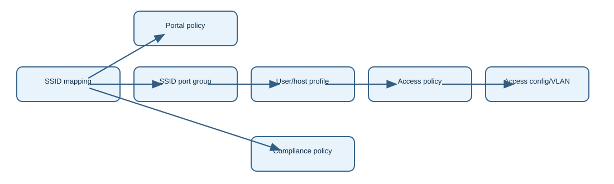
Edit draw.io diagram
8. FortiAuthenticator — FIDO2 user-verification policy and authenticator behavior
FIDO2 authentication separates possession of a registered credential from local user verification on the authenticator. A browser and authenticator may prove possession of a private key, but whether the authenticator must also verify the human with a PIN, biometric, or another local gesture depends on the WebAuthn request and the authenticator's capabilities. FortiAuthenticator 6.6.3 introduced an administrator-controlled global user-verification setting under Authentication > User Account Policies > Tokens, influencing the instruction sent to the browser during FIDO registration and authentication.
The trust transaction starts with the relying-party login or registration request. FortiAuthenticator applies its authentication policy and generates a WebAuthn challenge with a user-verification requirement. The browser passes the challenge and requested options to the selected authenticator. The authenticator may prompt for a local PIN or biometric, then signs an assertion with its private key. FortiAuthenticator validates the cryptographic response, challenge binding, credential identity, and policy requirements before completing the login. The private key should not leave the authenticator.
User presence and user verification are different concepts. A touch can show a user is physically present without proving a PIN or biometric was checked. Conversely, a platform authenticator can satisfy local verification through an operating-system prompt. An administrator should not infer the achieved assurance level from the fact that a FIDO2 key was registered. Examine the configured verification requirement and the resulting authentication ceremony, including the browser's reported failure if the authenticator cannot satisfy the request.
Implementation should start with a policy decision: which applications and users require local verification, and which registered authenticators can satisfy it? Configure the global Tokens user-verification setting supported by the installed FortiAuthenticator release, register representative platform and roaming authenticators, and test both enrollment and login. Fortinet's release note confirms the location and purpose of the control but does not, in the excerpt verified for this run, establish all available option values. Therefore this chapter does not invent CLI syntax or a list of values; consult the target release GUI before changing production policy.
Troubleshooting a user who can enroll a key but cannot authenticate requires distinguishing credential registration, origin/relying-party binding, challenge validity, authenticator support, and the user-verification step. A PIN prompt that never appears may be a browser or authenticator behavior; a prompt that succeeds followed by rejection may be a server-side credential or policy failure. Compare the same user and relying party with two authenticators and capture browser diagnostics and FortiAuthenticator authentication events. A successful touch alone does not establish policy-compliant user verification.
Operationally, plan recovery for lost authenticators, changed biometric enrollment, PIN lockouts, and authenticator replacement. Do not weaken a production verification requirement solely to accommodate one legacy key without documenting the assurance tradeoff. After upgrades, repeat registration and login tests because browser, platform, and authenticator firmware changes can alter ceremony behavior independently of FortiAuthenticator. No directly matching recent Fortinet Community case was independently verified for this feature during this sweep.
GUI: Authentication > User Account Policies > Tokens
Set FIDO2 user verification according to release-supported options.
Test registration and authentication with platform and roaming authenticators.
No CLI example claimed: primary source describes a GUI control.
Evidence: WebAuthn challenge options; authenticator PIN/biometric ceremony; assertion acceptance; FortiAuthenticator authentication log. Touch is not equivalent to verified identity.
Primary: https://docs.fortinet.com/document/fortiauthenticator/6.6.7/administration-guide/429138/fortiauthenticator-6-6-3 · Matching Community scenario not verified
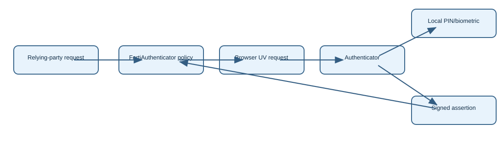
Edit draw.io diagram
9. FortiPAM — Session-video storage allocation, quota modes and WebRDP launch failures
FortiPAM session recording adds a persistent video-write dependency to an otherwise successful privileged session launch. A user may authenticate to a secret and reach the target when recording is disabled, yet experience an immediate WebRDP disconnection when recording is enabled. This does not automatically indicate wrong target credentials or a proxy routing fault. FortiPAM needs a recognized, writable video-storage area before the recorder can persist session media, and storage state can become part of the effective session-launch outcome.
The 1.9.0 Administration Guide separates overall storage quota, video allocation, file allocation, retention, and recording settings. The maximum aggregate storage percentage is 95%. Video Storage Allocation defaults to 90% of the video partition and can be configured within the documented range. Video Storage Mode has two materially different full-quota behaviors: Rolling evicts the oldest eligible recordings within the retention window, whereas Stop ceases storing new recordings when quota is full. These are capacity and evidence-retention decisions, not user authorization settings.
Video Storage Duration defaults to 1095 days in the cited guide. Live Recording is disabled by default; when enabled, intermediate .chk files are produced, while playable WebM files are built from them. Recording resolution, color depth, frame rate, and key-frame rate affect storage consumption. A high-resolution/high-FPS configuration can exhaust a video partition faster than a lower-resolution one. Adjusting retention without verifying the actual mounted video disk cannot repair a missing-disk condition.
Fortinet's October 17, 2026 Community case describes a Web Secret that launches when Session Recording is off but disconnects when it is on. The recommended first evidence is Log & Report > Disk Usage and the CLI execute disk list. The example shows a log disk and a separate disk labeled for PAM video. On the affected Hyper-V VM, adding and allocating an additional disk for VIDEO storage resolved the failure. This is a specific storage-dependency failure class; it should not be generalized to every WebRDP disconnect.
Verify in layers: confirm the secret launch succeeds without recording; enable recording on a controlled test secret; inspect disk allocation and available video capacity; launch again; check Secret Events & Videos for the recording completion and playback artifact. A session that reaches the target proves credential and launcher function, but not that a video file was written. A mounted video disk proves capacity exists, but not that the recorder produced a playable file. A Video upload finished event plus playback is stronger end-to-end evidence.
At scale, estimate capacity from concurrent sessions, typical duration, resolution, and FPS. Choose Rolling only if retention policy permits eviction; Stop preserves existing recordings but sacrifices new evidence when full. Alert on disk warnings before critical sessions fail. In HA or virtualized deployments, ensure each node's expected video storage is provisioned and encryption settings match the disk state. Do not delete evidence or change quota modes as an ad hoc troubleshooting action without retention and audit approval.
GUI: System > Settings > Advanced > Storage Settings
GUI: Log & Report > Disk Usage
CLI: execute disk list
Verify separate VIDEO storage and session video completion.
Evidence: Launch without recording versus with recording; execute disk list labels; disk quota; Video upload finished; WebM playback. October 17 Community case.
Primary: https://docs.fortinet.com/document/fortipam/1.9.0/administration-guide/35785/settings · Scenario: https://community.fortinet.com/fortipam-52/resolve-web-secret-session-disconnection-when-session-recording-is-enabled-230619
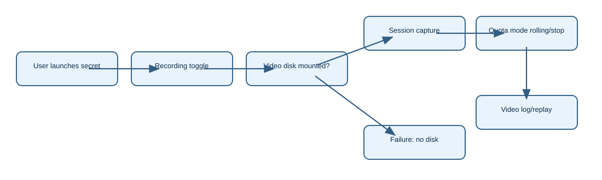
Edit draw.io diagram
10. FortiSIEM — MITRE ATT&CK rule coverage versus incident coverage: what each matrix proves
FortiSIEM presents MITRE ATT&CK coverage through distinct rule and incident views. Rule Coverage maps configured detection content to tactics and techniques; Incident Coverage maps actual detected incidents in a selected time range. These matrices answer different questions. A populated rule-coverage cell means detection content has a mapping, not that the organization generated the required telemetry, enabled the rule, or detected an attack. An incident-coverage cell reflects an incident that FortiSIEM actually associated with the technique in that time window.
The rule side begins with a detection rule definition and its tactic/technique metadata. The runtime side begins with log or metric ingestion, parser classification, event normalization, rule matching, and incident creation. Incident Coverage aggregates the resulting incidents by tactic. The Administration Guide exposes IT and ICS perspectives, so a team must select the correct ATT&CK domain before interpreting coverage. Comparing an ICS rule set to an IT incident matrix would produce a misleading gap analysis.
The 7.3.5 User Guide documents INCIDENTS > MITRE ATT&CK > IT or ICS > Incident Coverage and a Rule Coverage view. It explains that clicking a tactic reveals related incidents, with severity, status, reporting device, source, target, and technique metadata. The analyst can open triggering events, rule summary, and investigation views. This drill-down is essential because an incident's ATT&CK label is metadata on a rule-derived event, not an independent forensic verdict that the technique truly occurred.
A useful verification lab starts with one enabled rule that has a known ATT&CK mapping. Confirm the rule appears in Rule Coverage. Then feed or replay a controlled event that actually meets the rule conditions, respecting supported testing procedures. Confirm the event was parsed, the rule triggered, and the incident appears in the expected time range and ATT&CK cell. A missing incident despite visible rule coverage can be caused by absent telemetry, wrong parser fields, rule thresholds, disabled content, or simply no matching activity.
During triage, distinguish three evidence layers: the original raw event, the normalized event attributes consumed by the rule, and the incident object. If a rule triggers on a wrong host or target, inspect parser mapping and grouping keys before changing ATT&CK metadata. If a technique is absent from Rule Coverage, review content-pack installation and rule mapping. If Rule Coverage is populated but Incident Coverage is empty, inspect time range and rule execution before declaring that no attacker behavior occurred.
Use the matrices to prioritize engineering investment, not as a standalone compliance certificate. Coverage quality depends on source onboarding, retention, rule tuning, parser health, and incident suppression. After a content-package upgrade, compare mapping changes and validate representative detections, because a new technique label can change the matrix without changing sensor visibility. No feature-specific Fortinet Community troubleshooting article was independently verified during this sweep; the scenario questions use documented FortiSIEM mechanics rather than claiming a new TAC finding.
GUI: INCIDENTS > MITRE ATT&CK > IT or ICS
Compare Rule Coverage and Incident Coverage for same domain.
Drill into Rule Summary, Triggering Events and Investigation.
Evidence: Rule mapping → parsed event → rule trigger → incident ID → MITRE technique. A mapped rule is not evidence of runtime detection.
Primary: https://docs.fortinet.com/document/fortisiem/7.3.5/user-guide/369003/mitre-att-ck-view · Matching Community scenario not verified
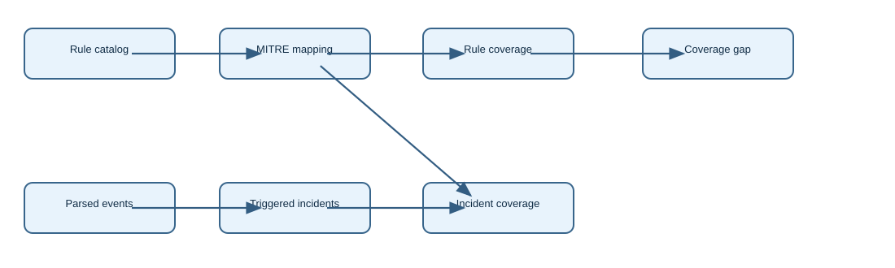
Edit draw.io diagram
11. FortiSASE — Endpoint-to-endpoint private access through SPA hub and BGP re-advertisement
FortiSASE endpoint-to-endpoint communication permits remote clients attached to FortiSASE Cloud Security tunnels to reach services on other remote clients under private-access policy. It is not automatically an unrestricted peer-to-peer mesh. The cited 25.3.67 feature guide requires at least one Secure Private Access (SPA) Hub and describes traffic being routed through that hub. The design is therefore controlled by SIA endpoint connectivity, SPA hub routing, BGP reachability, and explicit private-access policy.
The operator enables Endpoint-to-endpoint Traffic under Network > BGP and saves the setting. On the SPA hubs, prefixes learned from FortiSASE Security PoPs must be re-announced so other PoPs can route toward the endpoint networks. That BGP step is easy to miss: an endpoint may authenticate to its PoP and have working Internet access while another PoP lacks a route to its address. A successful SIA tunnel is not evidence that cross-PoP SPA routing is complete.
Policy evaluation differs by topology. For endpoints on the same Security PoP, the guide calls for an Endpoint to endpoint policy under Security > Policies > Secure Private Access. It can restrict user groups, security posture tags, services, schedules, and action. For endpoints on different PoPs, To hubs and From hubs policies are required. The documented design also calls for these hub policies when enabling the feature generally. The source and destination identities must be permitted in the relevant direction; routing alone is insufficient.
To validate, connect two managed test endpoints, record their assigned tunnel addresses and Security PoPs, and verify the SPA hub's learned and re-advertised prefixes. Test a single approved TCP service first. Compare same-PoP and cross-PoP cases, because a local endpoint-to-endpoint policy cannot substitute for missing hub policies on a cross-PoP path. Check FortiSASE Private Access Traffic to Hubs, From Hubs, and Endpoint to endpoint log categories; the Community log-export guide identifies these as distinct traffic views.
Troubleshooting should isolate authentication, routing, and policy. If endpoint A cannot reach any SPA destination, verify its SIA tunnel and private access assignment. If A reaches servers behind the hub but not endpoint B, inspect endpoint prefix advertisement and re-advertisement, hub route tables, and B's assigned PoP. If routes exist but the connection is denied, inspect To/From hub policies and posture or user matches. A policy Accept hit on one leg does not prove the reverse leg or target service is available.
Security implications are substantial: enabling endpoint-to-endpoint reachability can create new lateral-movement paths. Begin with narrow services, least-privilege groups, and posture conditions, and log denied traffic during pilot testing. HA and scale designs should confirm that redundant SPA hubs preserve learned endpoint prefixes and policy symmetry after failover. After FortiSASE service upgrades, retest both same-PoP and cross-PoP flows because policy navigation and routing capabilities are release-dependent.
FortiSASE portal: Network > BGP > Endpoint-to-endpoint Traffic = On
SPA hubs: re-announce Security PoP-learned endpoint prefixes
Security > Policies > Secure Private Access:
configure Endpoint to endpoint, To hubs, and From hubs policies.
Evidence: SIA tunnel status; PoP endpoint prefixes; hub BGP re-advertisement; matching SPA policy; To/From hub and E2E traffic logs.
Primary: https://docs.fortinet.com/document/fortisase/25.3.67/feature-administration-guide/983665/enabling-endpoint-to-endpoint-communication · Scenario: https://community.fortinet.com/fortisase-58/technical-tip-how-to-download-logs-on-fortisase-163971
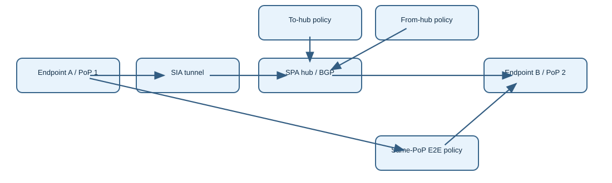
Edit draw.io diagram
12. Secure SD-WAN — Preserving original-direction DSCP on return traffic with diffserv-copy
Enterprise SD-WAN often marks packets leaving a spoke so upstream transport can apply differentiated QoS. A server behind the hub may send replies with no useful DSCP marking. FortiOS provides diffserv-copy on a firewall policy so the hub can copy the DSCP observed in the original direction of a session onto the reply direction. This preserves a session's class across the round trip without requiring every server to classify its own replies. It is a firewall-session behavior, not a routing-protocol advertisement.
Consider a spoke client sending a TCP flow over an SD-WAN overlay. The spoke policy or SD-WAN rule marks the outgoing packets, for example DSCP binary 101010. The hub FortiGate receives that marked original-direction packet and creates a session under a matching firewall policy. With diffserv-copy enabled on that policy, the hub can apply the original direction's DSCP to reply packets associated with the same session. The resulting reply leaves toward the spoke with a class matching the initiating flow.
Fortinet's 7.2.9 Administration Guide documents config firewall policy, edit policy ID, set diffserv-copy enable. The related Community technical tip notes that when this option is enabled, manual diffserv-forward and diffserv-reverse marking controls become hidden in the policy. This distinction matters: copying the observed original class and imposing a fixed reverse class are alternative semantics. A configuration review that looks only for explicit reverse-tag values can miss the effective copy behavior.
Verification requires two capture points and the right session direction. Capture the spoke-to-hub packet before the hub policy, record its DSCP, and capture the corresponding hub-to-spoke reply after policy processing. Compare the same five-tuple and the DSCP bits in the IP header. Confirm the matched hub firewall policy has diffserv-copy enabled. A tagged request alone proves only the spoke marked traffic; a tagged reply at the server side may have been produced by the server rather than copied by the hub.
A common failure occurs when the spoke's SD-WAN rule sets a DSCP tag, but return traffic remains best effort. Check that the original packets actually arrive at the hub with the expected marking; an intermediate underlay may bleach DSCP. Then check the policy ID and whether the return packet belongs to the same session. If traffic uses a different policy, asymmetric path, or independent connection, the expected copy may not occur. Do not attempt to fix an upstream remarking problem by changing BGP communities.
Design caveats include traffic offload, tunnel encapsulation, QoS trust boundaries, and DSCP preservation across providers. A packet capture on the inner IP header may differ from an outer tunnel header; label capture points accordingly. During HA failover, verify session continuity and return marking rather than assuming the setting alone guarantees identical behavior. This feature is different from earlier SD-WAN route selection or SLA probing lessons because it changes per-session QoS marking on replies, not link choice.
config firewall policy
edit <hub-policy-id>
set diffserv-copy enable
next
end
# Capture original and reply directions; compare inner/outer DSCP.Evidence: Original spoke packet DSCP, matched hub firewall policy, reply packet DSCP on hub egress. Differentiate inner and outer headers.
Primary: https://docs.fortinet.com/document/fortigate/7.2.9/administration-guide/170253/copying-the-dscp-value-from-the-session-original-direction-to-its-reply-direction · Scenario: https://community.fortinet.com/fortigate-3/technical-tip-differentiated-services-code-point-dscp-replicate-feature-115353
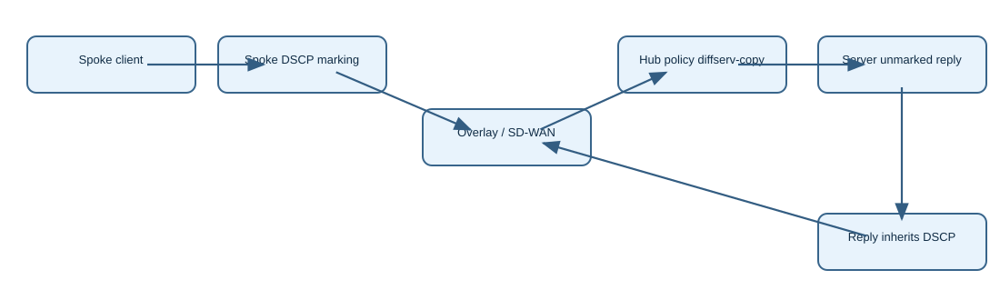
Edit draw.io diagram